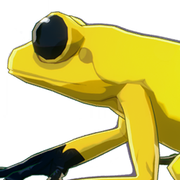

Goldenback Frog
Resources

Material for cooking.
A common small frog on the banks of lakes and rivers, considered as a different color of the black-striped frog. Its number is relatively small, and it is easier to be found by predators. Some amphibian enthusiasts will look for goldenback frogs after the rain and bring them home for breeding.